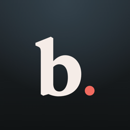
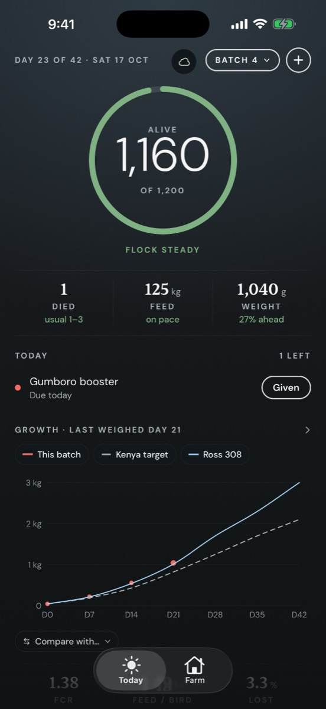

BandaBroiler crops, day by day.
Banda keeps each crop of broilers on track, from the day the chicks arrive to the day they're sold.

Today, at a glance
See how many birds are alive, how yesterday compared with usual, and what needs doing: a missed log, a vaccine due, feed running low, or a batch ready to harvest.
Log in under a minute
Record deaths, bags of feed and a sample weigh-in from the shed. No signal? Keep logging. Everything syncs when you're back online.
See how they grow
Every weigh-in lands on a growth chart against the Kenya target, Ross 308 and your own best batch. Feed conversion, feed per bird, losses and final weights are worked out as you go.
Supplies in one place
Know what feed is in the store and how long it will last, and log medicines with their withdrawal dates so you know when birds are safe to sell.
One farm, the whole team
Invite workers with a one-time code so they log from their own phones. You see everything they record.
Free on iPhone. No ads, no tracking.